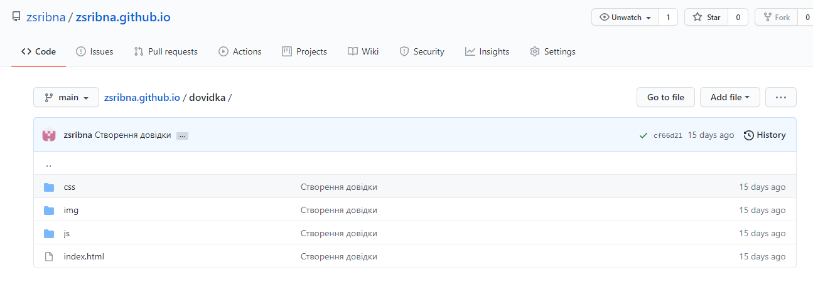
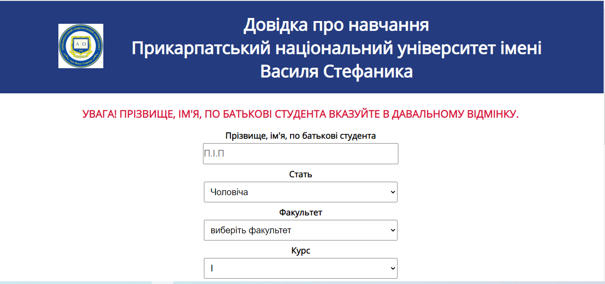
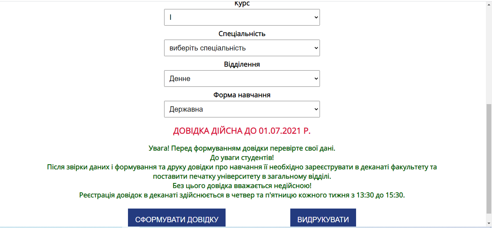
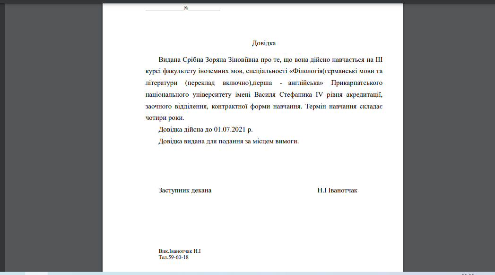
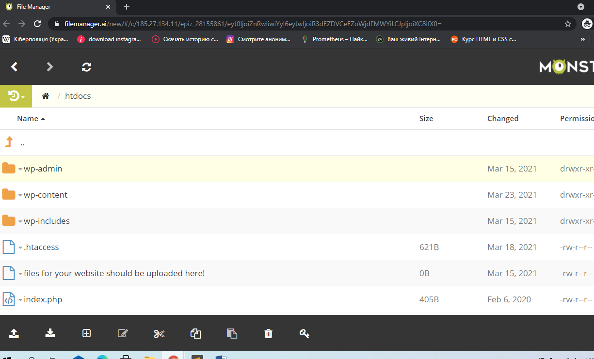
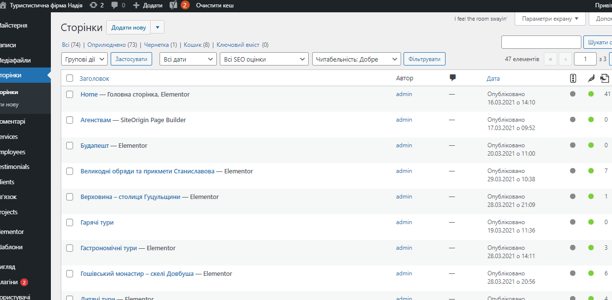
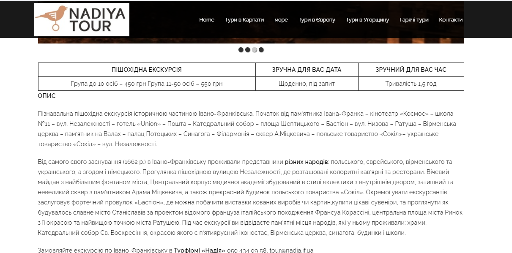
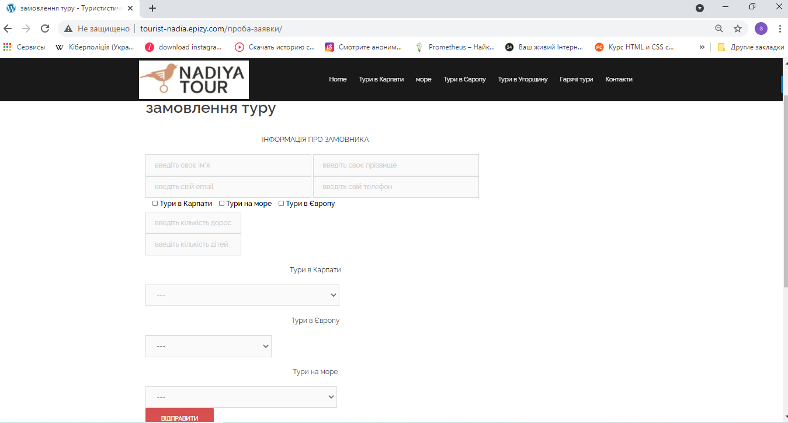

Вступ. Мною, студенткою 1-го курсу магістратури факультету математики та інформатики спеціальності «Комп’ютерні науки» Срібною Зоряною Зіновіївною, в період з 15.02.2021 р. по 27.03.2021 р. відповідно до наказу № 41-С від 17.03.2013р. Прикарпатського національного університету імені Василя Стефаника, з метою закріплення знань, отриманих під час навчання, адаптації до умов роботи, цілеспрямованого формування більш ґрунтовних професійних знань, нових практичних навичок та умінь необхідних для виконання завдань, була пройдена виробнича практика на посаді інженер-програміст .
Виробничу практику проходила в ДВНЗ «Прикарпатський національний університет імені Василя Стефаника» з 15 лютого по 26 березня 2021 року в лабораторії GameLab PNU кафедри комп’ютерних наук та інформаційних систем ДВНЗ «Прикарпатський національний університет Василя Стефаника» ,завідувачем якої є Петришин Любомир Богданович .Викладач має великий стаж роботи, високу фахову й методичну підготовку. На кафедрі було створено всі умови для проходження практики.
Метою даного індивідуального завдання було створення веб-сайту довідки про навчання в ПНУ ім В.Стефаника ,а також розробити туристичний сайт де користувач зможе замовити тур , а також дивитись опис турів перед тим як робити замовлення.
Структура сайту для оформлення довідки про навчання :
Структура туристичного сайту :
Етапи створення туристичного веб-сайту:
Абревіатура HTML розшифровується як Hyper Text Markup Language - мова розмітки гіпертексту. В даному випадку слово «гіпертекст» означає, що за допомогою мови HTML ви можете створювати посилання, що дозволяють відвідувачам швидко і легко переміщатися з однієї сторінки на іншу. Мова розмітки дозволяє вам створити примітки до тексту, а ці примітки, у свою чергу, надають додаткове значення вмісту документа. Створення посилань є одним з основних завдань при розробці сайтів. Однак можливості HTML не обмежуються тільки роботою з посиланнями. Він дозволяє працювати зі скриптами, зображеннями, відео файлами, звуком і багатьом іншим.
Веб-браузери отримують HTML-документи з вебсервера або з локальної пам'яті і передають документи в мультимедійні вебсторінки. HTML описує структуру вебсторінки семантично і спочатку включені сигнали для зовнішнього вигляду документа. Елементи HTML є будівельними блоками сторінок HTML. За допомогою конструкцій HTML, зображення та інші об'єкти, такі як інтерактивні форми, можуть бути вбудовані у візуалізовану сторінку. HTML надає засоби для створення структурованих документів, позначаючи структурну семантику тексту, наприклад заголовки, абзаци, списки, посилання, цитати та інші елементи.
CSS - це мова стилів, що визначає відображення HTML-документів. Наприклад, CSS працює зі шрифтами, кольором, полями, рядками, висотою, шириною, фоновими зображеннями, позиціонуванням елементів. Поява CSS стало революцією у світі web-дизайну. Конкретні переваги CSS:
JavaScript (Джаваскріпт) – мова програмування, що дозволяє реалізувати ряд складних рішень в web-документах. Вона допомагає зробити сторінки сайту більш інтерактивними, обробляє дії користувачів сайту. Це об'єктно-орієнтована клієнтська мова, яка підтримується додатками, що працюють з дизайном сайту. JavaScript став ще більш популярним в середовищі девелоперів, коли з'явилася AJAX-технологія, що призвело до нового етапу в розробці сайтів. Поряд з HTML і CSS, Джаваскріпт – третій важливий блок, на основі якого будується більшість стандартних веб-інтерфейсів. Щоб самостійно розібратися з роботою мови, користувачеві знадобиться знання основ HTML і CSS.
Які можливості дає JavaScript
Ядро JavaScript включає цілий ряд функцій, які дають наступні можливості:
Переваги Javascript:
Недоліки JavaScript
Сьогодні Javascript є однією з найбільш популярних клієнтських мов.
До недавнього часу веб-сайти на базі CMS були останнім нововведенням в мережі. Багато великих компаній використовували cms для своїх сайтів, оскільки вони дозволяють людям керувати контентом, не знаючи тонкощів HTML . WordPress є вільним програмним забезпеченням з відкритим вихідним кодом, яке можна завантажити та встановити за лічені хвилини. Крім того, плагіни і теми розширюють можливості платформи.
Оскільки платформа WordPress відкрита, вона дозволяє змінювати вихідний код системи так, як ви вважаєте за потрібне. Якщо зміни будуть успішними, вони можуть бути передані громаді на розгляд, щоб включити їх до наступного офіційного випуску системи. Крім того, додатковий функціонал може бути реалізований за допомогою модулів розширення або плагінів.
Плагін - це розширення WordPress, яке додає функцію або функціональність, яка спочатку не була притаманна йому. Платформа WordPress існує в двох формах: WordPress.org і WordPress.com. Сайт WordPress.org останні версії цього CMS, плагіни, теми та локалізація. WordPress.com є сервісною компанією під назвою Automattic, яка була заснована для надання безкоштовного хостингу для WordPress. WordPress.com побудований на відгалуженнях WordPress під назвою WordPress MU, що дозволяє контролювати кілька сайтів одночасно за допомогою однієї встановленої копії цього CMS.
Ресурс WordPress.com належить і підтримується компанією Automattic, яка також контролює WordPress.org сайту і забезпечує його розробку. Ця компанія надає інфраструктуру для підтримки CMS WordPress і пропонує роботу багатьом веб-розробникам цієї системи.
Можливості
Структура сайту довідки
В папці dovidka є папка css, в якій знаходиться файл style.css .В даному файлі записані всі стилі які застосовані на сайті.
В папці img розташована емблема університету.
В папці js розташовано папку pdfmake-master і сам js-файл в якому записаний код за допомогою якого інформація з полів записується в pdf-файл який можна пізніше роздрукувати. За допомогою pdfmake-master формується pdf-файл .
В файлі index.html записаний код який відповідає за потрібні поля які треба для правильного формування довідки про навчання в університеті .
Головна сторінка
 Сформована довідка
Структура туристичного сайту
wp-admin
В цій папці міститься різні файли, такі як CSS, JavaScript і PHP, які забезпечують функціональність консолі та адміністративної частини сайту.
wp-content
Папка wp-content містить всі завантажені дані користувача та розділяється на інші папки: languages , plugins , themes , uploads
Папка «languages» містить файли перекладів та локалізації двигуна у форматі .mo та .po. Каталог «themes» містить всі завантажені теми (шаблони).
wp-includes
Дана папка містить в собі всі основні та необхідні файли для запуску WordPress через фронтенд (користувальницький інтерфейс). Папка містить файл PHP, CSS, JavaScript та файли зображень WordPress, які забезпечують основні функції програмного забезпечення. Іншими словами – це ядро двигуна Вордпрес.
Папки wp-admin і wp-includes є основними папками WP, тому в них бажано нічого не змінювати. При кожному оновленні Вордпрес відбуваються зміни файлів в цих папках, тому ваші правки будуть загублені.
Якщо зайти в адмін, то можна побачити які сторінки були створені для того, щоб сайт працював, також можна переглядати мулитимедіа яка використовується.Також через адмін-користувача можна створювати контакну форму і слайдери, які викорстувються при опису турів
Головна сторінка сайту
Опис тура
Замовлення тура
Тестування сайту займає ключовий момент в подальшому розвитку інтернет ресурсу і допомагає визначити його якість. Дана послуга дозволяє перевірити на наявність помилок, допущених при розробці. Тестування сайтів виконується для нових ресурсів і тих, які вже давно працюють, але не показують хороших результатів, ресурсів на етапі модернізації. Виконано детальний аналіз під час усього тестування для виявлення інших помилок, уразливих місць, не відповідностей вимог для повноцінної роботи і розвитку сайту, створив звіт, який було передано учасникам проекту та ментору нашої групи. Мною також були проведені повторні тестування, щоб перевірити якість виправлених недоліків та запобігти виникненню нових. Перевірка сайту проводиться до того часу, поки він повністю відповідав специфіці технічних завдань які переді мною стояли.
Веб-програмування в наш час — це одна з найбільш перспективних сфер діяльності. У сучасному світі, якщо у будь-якого бізнесу немає власного сайту, він значно відстає від своїх конкурентів. Стрімкий розвиток інтернету за останні пару років призвів до збільшення кількості нових онлайн-сервісів. Починаючи від первісних характеристик і основних сервісів, доступних користувачам (пошта і веб), інтернет розвинувся у велику всесвітню павутину з великою кількістю різних сервісів, технологічних рішень і став тим місцем, де зустрічаються практично бізнес-організації всього світу. Раніше більшість сайтів були статичними і вимагали внесення правок в їх вміст вручну, зараз динаміка розвитку проектів вимагає готовності швидко реагувати на зміни і впроваджувати їх з максимальною оперативністю. При цьому не усі користувачі хочуть або можуть собі дозволити звертатися до розробників, особливо якщо сайт вимагає постійної роботи над ним. Повноцінний сайт з серйозним набором можливостей проблематично написати «з нуля», тому програмістам багато в чому допомагає CMS.
CMS — це система керування контентом, набір скриптів для створення, редагування і управління контентом сайту. На професійному жаргоні CMS також називають «двигун». Прикладами CMS є WordPress, Joomla, OpenCart.
Ці системи керування контентом дозволяють користувачам, які не володіють навичками розробки сайтів і знаннями мов програмування, самостійно працювати над створенням і зміною сайту.
WordPress — система керування вмістом з відкритим кодом, яка через свою простоту в установленні та використанні широко застосовується для створення вебсайтів. Сфера використання — від блогів до складних вебсайтів. Вбудована система тем і плагінів у поєднанні з вдалою архітектурою дозволяє конструювати на основі WordPress практично будь-які вебпроекти.
Переваги WordPress
Недоліки WordPress